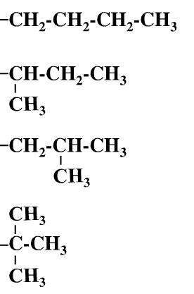

众所周知，大连 24 中是一所神奇的学校，在那里，化竞的同学很多都擅长写代码。
有一天，化学不及格的胡小兔向化竞巨佬晴岚请教化学题：
“$n$ 个碳原子的烷基共有多少种同分异构体？”
刚刚得了化竞全市第一的晴岚听了，认为这道题十分简单，建议胡小兔写个程序解决这个问题。但胡小兔弱得连什么是同分异构体都不知道，于是晴岚给胡小兔画了个图——例如 $n = 4$ 时 (即丁基)，有 $4$ 种同分异构体：
同理，其他常见烷基同分异构体数目如下表：
| $n$ | $1$ | $2$ | $3$ | $4$ | $5$ | $6$ |
| 同分异构体数目 | $1$ | $1$ | $2$ | $4$ | $8$ | $17$ |
现在已知碳原子个数 $n$，求对应的烷基有多少种同分异构体。
注意：这里的烷基计数不用考虑空间异构，能否稳定存在等各种特殊情况。也就是说，你要求的是$n$ 个点的每个点度数不超过 $4$ 且根的度数不超过 $3$ 的有根树的数目。
共一行，包含一个正整数 $n$ ($n \leq 10^5$)，表示烷基中碳原子的数目。
输出一行一个整数，表示该烷基同分异构体的数目，对 $998244353$ 取模。
注意这题中 $n$ 到了 $10^5$，那道题中的 $O \left( n^2 \right)$ DP 的方法到本题中已经无法通过。我们尝试着寻找一种更快的方法。
首先，那种方法很难进行卷积优化，因此需要换一种思路，比如从生成函数的角度来考虑。
我们设答案的生成函数为 $f \left( x \right) = f_0 + f_1 x + f_2 x^2 + \cdots$，其中 $f_i$ 表示 $i-$烷基的个数。
由于每个烷基可以对应到根的度数 $\leq 3$，节点的度数不超过 $4$ (子节点个数 $\leq 3$) 的有根树，因此除去根节点的 $x$ 外，剩下的应该是 $0 \sim 3$ 棵有根树之间的无序排列。
为了方便，我们定义 $f_0 = 1$，表示三棵树中允许出现空树。
不过，这里显然不能使用 $\dfrac {f^3 \left( x \right)} {3 !}$，原因和这里一样，因为子树之间可能同构。
考虑这个模型，你需要选择三棵树，它们之间是不计顺序的。
换句话说，就是，两个方案 "等价" 当且仅当存在一个大小为 $3$ 的置换，使一个方案变成另一个方案。
于是，和 [Local #14]Set 类似，我们就可以使用 Pólya 计数定理 (的生成函数形式) 了。
我们需要寻找一种三棵子树的 "染色" (注意 "染色" 概念的抽象性，一棵树也可以是一种染色)，求在对称群 $S_3$ 下不同的轨道个数。
易知 $\left| S_3 \right| = 6$，仍然按照循环指标枚举置换：
$t_1^3$：
显然此时只有恒等置换，故贡献为 $f^3 \left( x \right)$。
$t_1 t_2$：
这样的置换共有 $3$ 个：$\left( 1 2 \right) \left( 3 \right), \left( 1 3 \right) \left( 2 \right), \left( 1 \right) \left( 2 3 \right)$，故贡献为 $3 f \left( x \right) f \left( x^2 \right)$。
$t_3$：
这样的置换只有 $2$ 个：$\left( 1 2 3 \right), \left( 1 3 2 \right)$，故贡献为 $2 f \left( x^3 \right)$。
由 Pólya 计数定理，最终方案的生成函数等于对应循环指标贡献的平均数，即 $\dfrac 16 \left( f^3 \left( x \right) + 3 f \left( x \right) f \left( x^2 \right) + 2 f \left( x^3 \right) \right)$。
综上，$$ f \left( x \right) = 1 + x \cdot \frac 16 \left( f^3 \left( x \right) + 3 f \left( x \right) f \left( x^2 \right) + 2 f \left( x^3 \right) \right) \tag 1 \label 1 $$
咋一看觉得 $\eqref 1$ 式并没有较好的处理方式，因此我们尝试使用 Newton 迭代法进行暴力求解。
在 Newton 迭代的过程中，我们要从 $f \left( x \right) \bmod x^k$ 得到 $f \left( x \right) \bmod x^{2 k}$。这样一来，可以发现，如果我们知道了 $f \left( x \right) \bmod x^k$，那么很容易就能知道 $f \left( x^2 \right), f \left( x^3 \right)$ 等模 $x^{2 k}$ 的值 (它们之间的系数是一个缩放的关系)。
因此在 $\hspace{-0.444em} \pmod {x^{2 k}}$ 意义下，$\eqref 1$ 式就是一个关于 $f \left( x \right)$ 的三次方程，因此由 Newton 迭代的理论，可设 $A \left( f \right) = x \cdot \left( f^3 + 3 f \cdot U + 2 V \right) - 6 f + 6$ (其中 $U = f \left( x^2 \right), V = f \left( x^3 \right)$ 可以看成已知量)，那么
\begin{align*} f_{2 k} &= f_k - \frac {A \left( f_k \right)} {A' \left( f_k \right)} \\ &= f_k - \frac {x \cdot \left( f_k^3 + 3 f_k \cdot U + 2 V \right) - 6 f_k + 6} {x \cdot \left( 3 f_k^2 + 3 U \right) - 6} \\ &= \frac {f_k \cdot \left( x \cdot \left( 3 f_k^2 + 3 U \right) - 6 \right) - x \cdot \left( f_k^3 + 3 f_k \cdot U + 2 V \right) + 6 f_k - 6} {x \cdot \left( 3 f_k^2 + 3 U \right) - 6} \\ &= \frac {2 x \cdot \left( f_k^3 + V \right) - 6} {3 x \cdot \left( f_k^2 + U \right) - 6} \end{align*}
于是，通过一些简单的卷积和多项式求逆，就可以通过 $f_k$ 求得 $f_{2 k}$，从而完成 Newton 迭代。
总时间复杂度 $O \left( n \log n \right)$。
#include <bits/stdc++.h>
#define lg2(x) (31 - __builtin_clz(x))
typedef long long ll;
const int N = 530000, mod = 998244353, half_mod = (mod + 1) / 2, root = 31, iv3 = (mod + 1) / 3;
typedef int vec[N], *pvec;
inline int & reduce(int &x) {return x += x >> 31 & mod;}
ll PowerMod(ll a, int n, ll c = 1) {for (; n; n >>= 1, a = a * a % mod) if (n & 1) c = c * a % mod; return c;}
namespace Poly {
int l, n;
vec rev, x, y;
void NTT_init(int len) {
if (l == len) return; n = 1 << (l = len);
ll g = PowerMod(root, 1 << (23 - l));
*x = 1, *rev = 0;
for (int i = 1; i < n; ++i)
x[i] = x[i - 1] * g % mod, rev[i] = rev[i >> 1] >> 1 | (i & 1) << (l - 1);
}
void DNTT(int *d, int *t) {
int i, *j, *k, len = 1, delta = n, R;
for (i = 0; i < n; ++i) t[rev[i]] = d[i];
for (i = 0; i < l; ++i) {
delta >>= 1;
for (k = x, j = y; j < y + len; k += delta, ++j) *j = *k;
for (j = t; j < t + n; j += len << 1)
for (k = j; k < j + len; ++k)
R = (ll)y[k - j] * k[len] % mod,
k[len] = (*k - R < 0 ? *k - R + mod : *k - R),
*k = (*k + R >= mod ? *k + R - mod : *k + R);
len <<= 1;
}
}
inline void IDNTT(int *d, int *t) {
ll iv = mod - (mod - 1) / n;
DNTT(d, t), std::reverse(t + 1, t + n);
for (int i = 0; i < n; ++i) t[i] = t[i] * iv % mod;
}
vec B1, B2, B3;
void Mul(int deg, pvec a, pvec b, pvec c) {
if (!deg) {*c = (ll)*a * *b % mod; return;}
NTT_init(lg2(deg) + 1);
DNTT(a, c), DNTT(b, B1);
for (int i = 0; i < n; ++i) B1[i] = (ll)B1[i] * c[i] % mod;
IDNTT(B1, c);
}
void Inv(int deg, pvec a, pvec b) {
int len, i; ll iv = half_mod;
*b = PowerMod(*a, mod - 2), b[1] = 0, *B1 = *a, B1[1] = a[1];
for (len = 0; 1 << len < deg; ++len) {
NTT_init(len + 2);
memset(b + (n >> 1), 0, n << 1), DNTT(b, B2);
memset(B1 + (n >> 1), 0, n << 1), DNTT(B1, B3);
for (i = 0; i < n; ++i) reduce(B2[i] = B2[i] * (2ll - (ll)B2[i] * B3[i] % mod) % mod);
DNTT(B2, B3), std::reverse(B3 + 1, B3 + n), iv = (iv >> 1) + half_mod;
for (i = 0; i < n >> 1; ++i) b[i] = B3[i] * iv % mod;
memcpy(B1 + i, a + i, n << 1);
}
}
}
int D;
vec f, f2, f3;
vec f_ntt, fs_ntt, fc_ntt;
vec C0, C1, C2, C3;
int main() {
int i, i2 = 0, i3 = 0, len, n = 8;
scanf("%d", &D);
*f = f[1] = f[2] = 1, f[3] = 2;
for (len = 2; 1 << len <= D; ++len, n <<= 1) {
for (; i2 * 2 < n; ++i2) f2[i2 * 2] = f[i2];
for (; i3 * 3 < n; ++i3) f3[i3 * 3] = f[i3];
Poly::NTT_init(len + 2);
Poly::DNTT(f, f_ntt);
for (i = 0; i < Poly::n; ++i) fs_ntt[i] = (ll)f_ntt[i] * f_ntt[i] % mod, fc_ntt[i] = (ll)fs_ntt[i] * f_ntt[i] % mod;
Poly::IDNTT(fs_ntt, C0);
Poly::IDNTT(fc_ntt, C1);
*C2 = *C3 = 1;
for (i = 0; i < n - 1; ++i)
reduce(C2[i + 1] = (ll)(f3[i] - C1[i]) * iv3 % mod),
C3[i + 1] = (f2[i] + C0[i]) * (half_mod - 1ll) % mod;
Poly::Inv(n, C3, C0);
Poly::Mul(n * 2 - 1, C2, C0, f);
memset(f + n, 0, n << 2);
}
printf("%d\n", f[D]);
return 0;
}
坑1：在多项式倍增式操作 (求逆、Newton 迭代) 时还是需要注意及时清空数组的问题，以及 $U = f \left( x^2 \right), V = f \left( x^3 \right)$ 的系数加入不要太快，以免多项式次数超出范围。
坑2：可以适当扩大 NTT 的长度，来减小一些常数 (比如计算 $f_k^2, f_k^3$ 就只需要一次 DNTT 和两次 IDNTT)。